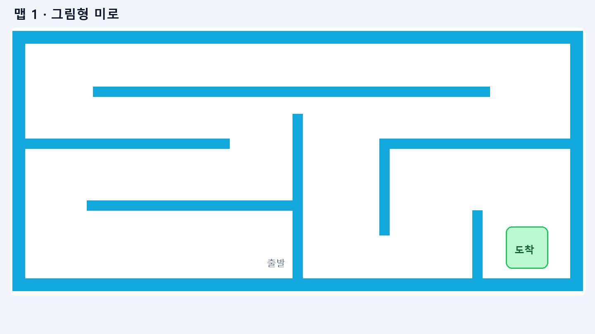
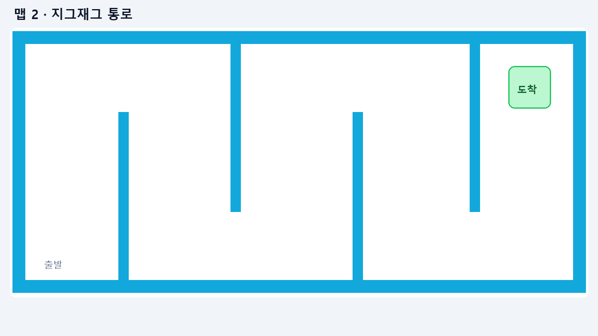
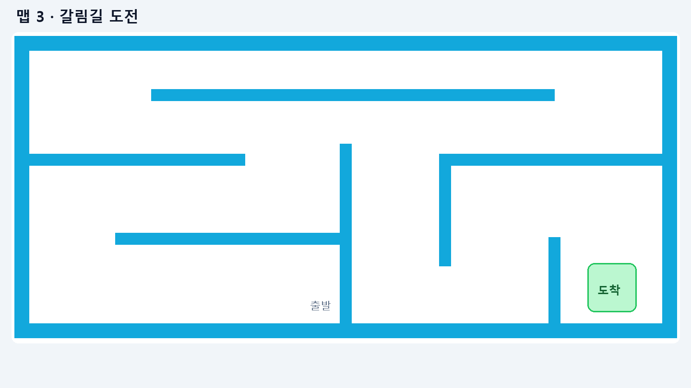

먼저 사용법 확인
블록을 어디서 찾고 어떻게 연결하는지 알아봅니다.
사용 안내서엔트리 오프라인 프로그램에서 학생용 파일을 불러온 뒤, ① 학생 코딩 · 여기만 수정 오브젝트를 선택하세요.
블록을 어디서 찾고 어떻게 연결하는지 알아봅니다.
사용 안내서학생용 시작 상태인 ‘전진만’으로 미로를 관찰합니다. 블록 수정은 엔트리에서 진행하세요.
동작 미리보기파일은 로직 테스트를 거쳤습니다. 엔트리 버전에 따른 불러오기와 함수 블록 표시는 수업 전 확인이 필요합니다.


